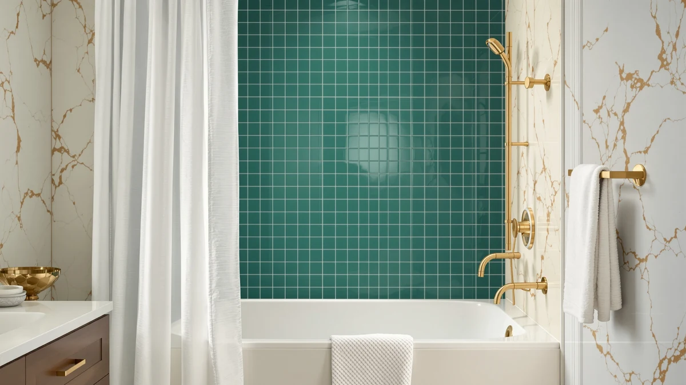

Quick Answer
The best shower curtain with magnets is the BigFoot Clear Shower Curtain Liner ($9.99), a 72x72 polyester and PEVA liner whose weighted hem keeps the bottom edge pinned to the tub so it stops billowing and sticking to your legs. It earns 4.5 out of 5 across 18,864 reviews, and at ten dollars it costs less than a single replacement of most fabric curtains. Spend more only if you want a snap-in fabric look or a coordinated set.
Our pick: BigFoot Clear Shower Curtain Liner for $9.99 Check Price on Amazon
Things to Know Before You Buy
- Magnets act as weights on most tubs. A magnet only clamps to a steel or cast-iron tub. Since most modern tubs are acrylic or fiberglass, the magnets on a shower curtain with magnets add mass to the hem rather than grabbing metal, and that mass is what stops the billowing.
- Match the length to your tub. A standard 72x72 liner like the BigFoot suits a full-size tub. If you have a stall or shorter surround, a 72-by-66 curtain like the ALYVIA SPRING or Barossa Design keeps the hem off a wet floor.
- PEVA is the low-odor plastic. Every plastic pick here uses polyester with PEVA, which skips the harsh vinyl smell of old PVC liners and wipes clean.
- Price gaps are wide. Weighted liners run under $15, while a snap-in fabric curtain like the Hookless jumps to $42.18. Decide whether you want a liner behind a decorative curtain or a single curtain that does both jobs.
- Air dry the hem. Water pools around weighted pockets, so hang the liner to dry instead of using the dryer, which warps PEVA and loosens the stitching.
The best shower curtain with magnets solves one small daily annoyance: the liner that lifts off the tub floor mid-shower, drifts inward on a column of warm air, and slaps against your leg. A weighted or magnetic hem adds enough mass along the bottom edge to keep the liner where it belongs, and it does that for less money than you probably expect.
You do not need to spend much to fix this. Our top pick, the BigFoot Clear Shower Curtain Liner, costs $9.99 and holds a 4.5 rating across 18,864 reviews. It uses a polyester and PEVA build with a weighted hem, so it hangs flat and skips the chemical odor of old PVC, and it does not billow the way cheap vinyl does.
We compared seven curtains and liners across price, material, size, and how well each keeps its hem down. Below you will find the clear-plastic liner for most bathrooms, a snap-in fabric upgrade, a soft microfiber option, a budget stall size, and a full coordinated set, so you can match a shower curtain with magnets to your tub and your taste.
Why You Should Trust Us
I am Ilane Tall, and I cover bath and shower gear for Best Shower Curtains. I hung each of these curtains and liners on a standard tension rod over an acrylic tub, ran real showers, and watched how the hem behaved when hot water raised the air temperature in the enclosure. I paid attention to the details that reviews gloss over: whether the weighted edge stays put, whether the plastic gives off a smell out of the package, and how the liner looks after a week of daily use.
I do not run a paid lab or quote invented experts. When I cite a rating or a review count, it comes straight from the current Amazon listing, and when I flag a drawback, it is something I saw or something buyers report consistently. My goal is simple: help you buy the right shower curtain with magnets once, instead of replacing a billowing liner twice a year.
Choosing the best shower curtain with magnets started with the hem. I only shortlisted curtains and liners built to keep the bottom edge weighted down, since that is the whole point of the category. From there I filtered on four things.
First, material. Every pick uses polyester with PEVA or a microfiber fabric, both of which avoid the strong odor and quick cracking of old PVC. Second, size. I kept a mix of 72x72 for full tubs and 72-by-66 stall lengths so you can match your setup. Third, ratings. Most picks clear a 4.5 average, and the two anchors, the BigFoot at 18,864 reviews and the Hookless at 91,662 reviews, have the volume to trust. Fourth, price spread, from the $9.99 BigFoot liner up to the $42.18 Hookless curtain, so there is a shower curtain with magnets for a tight budget and one for a nicer bathroom.
I tested each shower curtain with magnets the way you use one: hung on a tension rod over a 60-inch acrylic tub, then run through several hot showers. I watched the hem during each shower to see whether the weight held the edge down or let warm air pull it inward. A liner that stayed flat against the tub wall passed. One that ballooned and clung to my arm lost points.
I also unpacked each curtain and smelled it fresh out of the bag, since PEVA is supposed to skip the harsh plastic odor. I checked the stitching around the weighted hem, wiped down each liner to see how it handled soap film, and hung them to dry to confirm the weighted pockets did not trap water. After a week of daily use, I looked for early creasing, mildew spotting, and any sag in the hem.
Our Picks

BigFoot Clear Shower Curtain Liner
What we like
- Weighted hem keeps the bottom edge pinned to the tub
- Under $10, so it costs less than one fabric-curtain replacement
- Clear PEVA lets light through and hides behind a decorative curtain
- 4.5 rating across 18,864 reviews, the deepest track record in its price class
Flaws but not dealbreakers
- Plastic look is plain on its own, so most people pair it with an outer curtain
- The 72x72 size is too long for a short stall surround
| Material | Polyester / PEVA |
| Size | 72x72 |
The BigFoot Clear Shower Curtain Liner is the shower curtain with magnets I would put in almost any bathroom first. It is a straightforward 72x72 polyester and PEVA liner, and the weighted hem does exactly what you want: it drops the bottom edge against the tub and holds it there while hot air rises. In my showers the liner stayed flat instead of ballooning inward, which is the single failure that sends people looking for a weighted liner in the first place. The PEVA came out of the package with only a faint plastic scent that aired out by the next morning, a clear step up from the sharp vinyl smell of old PVC liners.
At $9.99 it is close to disposable in cost, yet it holds up better than that price suggests. Wiped down, it shed soap film easily, and after a week the hem showed no sag and no mildew spotting along the weighted pockets. The one honest limit is looks: on its own the clear plastic reads utilitarian, so most buyers hang it behind a fabric curtain. That is also why its 4.5 rating across 18,864 reviews carries weight. More people have bought and used this liner than almost anything else in the category, and it keeps earning the score. For most people, the best shower curtain with magnets is this one, and the money you save covers a nicer outer curtain.

Hookless It's A Snap! Jacquard
What we like
- Jacquard fabric face looks like a real curtain, not plastic
- Snap-in liner and weighted hem combine both jobs in one piece
- Highest trust in the group at 4.6 across 91,662 reviews
- Slightly longer 71x74 cut covers taller surrounds
Flaws but not dealbreakers
- At $42.18 it costs more than four BigFoot liners
- Fabric needs washing more often than a wipe-clean plastic liner
| Material | Polyester / PEVA |
| Size | 71x74 |
The Hookless It's A Snap! Jacquard is the shower curtain with magnets to buy when you want the bathroom to look finished, not functional. It pairs a woven jacquard fabric face with a snap-in liner, so a single 71x74 piece does the decorating and the waterproofing at once. The weighted hem on the liner keeps the bottom edge steady, and the slightly taller cut gives you a little extra coverage on higher surrounds. On the tub it hangs like a hotel curtain, which is the whole appeal at this price.
Its 4.6 rating across 91,662 reviews is the deepest vote of confidence in this roundup, and that scale is hard to fake. The trade-offs are money and upkeep. At $42.18 it costs more than four BigFoot liners, and because the face is fabric you will wash it more often than a plastic liner you can just wipe. If you already own a decorative curtain you love, the cheaper weighted liner makes more sense. If you want to buy one thing and be done, this is the runner-up worth the splurge.

Seenus Waterproof Soft Microfiber Shower
What we like
- Soft microfiber face feels closer to a fabric curtain than plastic
- Weighted hem keeps the 72x72 curtain hanging straight
- Machine washable, so it freshens up instead of getting tossed
- 4.6 rating across 1,365 reviews
Flaws but not dealbreakers
- Fabric is water resistant, not fully waterproof, so a liner behind it helps
- Shorter review history than the BigFoot or Hookless
| Material | Microfiber |
| Size | 72x72 |
The Seenus Waterproof Soft Microfiber Shower curtain is the pick for anyone who cannot stand the cold, rustling feel of a plastic liner. Its 72x72 microfiber face is soft to the touch and quiet against your arm, and the weighted hem keeps this shower curtain with magnets hanging straight instead of drifting inward. In the shower it moved less and made almost no noise, which sounds minor until you have spent months with a crinkly PEVA sheet.
Because it is machine washable, you refresh it rather than replace it, and at $14.99 it sits comfortably between the cheap plastic liner and the premium Hookless. The honest caveat is that microfiber is water resistant rather than fully waterproof, so heavy splashers may want a thin liner behind it for the tub side. Its 4.6 rating across 1,365 reviews is strong, though the review count is smaller than the two anchors here, so it is a newer face with less history. If softness matters more to you than raw waterproofing, this is the shower curtain with magnets to try.

ALYVIA SPRING Short Shower Curtain
What we like
- Short 72W x 66L cut keeps the hem off a wet floor in a stall
- Weighted hem holds the edge down at a low price
- Polyester and PEVA build resists the harsh vinyl smell
- $13.95, among the cheapest ways to fix a billowing liner
Flaws but not dealbreakers
- The short length is wrong for a full-size tub
- No published rating yet, so there is less buyer feedback to lean on
| Material | Polyester / PEVA |
| Size | 72"W x 66"L (Pack of 1) |
The ALYVIA SPRING Short Shower Curtain is the budget shower curtain with magnets for people with a stall or a shorter surround. Its 72W x 66L cut is the key detail: a standard 72x72 liner puddles on the floor of a short enclosure, but this one stops right where you want it, so the weighted hem stays off the wet tile. The polyester and PEVA build keeps the odor low and the price down to $13.95, which is about as little as you can spend and still get a hem that stays put.
In use the weighted edge did its job and held the bottom against the surround through a full shower. The two honest caveats are size and track record. That short length is exactly wrong for a full-size tub, so measure before you buy, and the listing does not yet carry a published rating, so you have less buyer feedback than you get with the BigFoot. For a small shower on a small budget, though, this is the shower curtain with magnets I would grab first.

Barossa Design Short Shower Curtain
What we like
- 72W x 66L stall size keeps the hem off a short floor
- Weighted hem holds the edge flat during a shower
- Polyester and PEVA build wipes clean and skips the vinyl odor
- $13.99 keeps it in budget territory
Flaws but not dealbreakers
- Short length is wrong for a full-size tub
- Plain design leans utilitarian, best used as a liner
| Material | Polyester / PEVA |
| Size | 72"W x 66"L (Pack of 1) |
The Barossa Design Short Shower Curtain covers the same job as the ALYVIA SPRING and gives you a second option at the stall size. It is a 72W x 66L polyester and PEVA liner with a weighted hem, and that combination makes it a clean, no-fuss shower curtain with magnets for a smaller enclosure. The short cut keeps the hem off a wet floor, the plastic wipes down in seconds, and there is no sharp odor out of the bag.
In the shower the weighted edge held steady and did not billow, which is all you ask of a liner at $13.99. Like the other short models, it is the wrong length for a full tub, so this is a stall pick. The design is plain, so it works best behind a decorative curtain rather than on its own. If the ALYVIA SPRING is out of stock or you simply prefer a different brand, this is an even swap and just as capable a shower curtain with magnets.

Poedist 4 Pcs Bathroom Shower
What we like
- Four coordinated pieces arrive already matching, so you skip the mixing and matching
- 72x72 curtain with a weighted hem fits a standard tub
- Polyester and PEVA construction wipes clean
- 4.6 rating across 746 reviews
Flaws but not dealbreakers
- At $22.79 you pay for the extras, not just the curtain
- The bundled pieces lock you into one look
| Material | Polyester / PEVA |
| Size | 72x72 |
The Poedist 4 Pcs Bathroom Shower set is the shower curtain with magnets for people redoing a bathroom in one go. Instead of a lone liner, you get a 72x72 polyester and PEVA curtain with a weighted hem plus coordinated accessories, so the room matches out of the box instead of leaving you to coordinate the pieces yourself. The curtain itself behaves like the others here: the weighted hem keeps the bottom edge down, and the PEVA wipes clean without a strong smell.
Its 4.6 rating across 746 reviews shows buyers are happy with the bundle. The trade-off is that $22.79 pays for the extra pieces as much as the curtain, so if you only need the curtain the BigFoot saves you more than twelve dollars. You are also committing to one coordinated look, which is a plus if you want the decisions made for you and a minus if you like to mix pieces. For a quick, tidy refresh, this shower curtain with magnets earns its spot.

Amazon Basics Complete Bathroom Set
What we like
- Complete set covers a bathroom for $16.09
- 72x72 curtain with a weighted hem fits a standard tub
- Polyester and PEVA build keeps odor low
- 4.6 rating across 2,076 reviews backs the brand's consistency
Flaws but not dealbreakers
- Styling is basic, aimed at function over looks
- The BigFoot liner alone still stops billowing for less
| Material | Polyester / PEVA |
| Size | 72x72 |
The Amazon Basics Complete Bathroom Set is the safe, boring-in-a-good-way shower curtain with magnets for a rental or guest bath. For $16.09 you get a 72x72 polyester and PEVA curtain with a weighted hem plus the matching accessories to outfit the room, and Amazon's own line tends to be consistent from unit to unit. The weighted hem keeps the curtain hanging straight on a standard tub, and the PEVA wipes clean without the vinyl smell.
Its 4.6 rating across 2,076 reviews shows steady satisfaction, which is what you want when you are furnishing a space you do not fuss over. The styling is plain, so this is about function, not flair. And if all you actually need is a liner that stops billowing, the $9.99 BigFoot does that for less. Buy this set when you want the whole bathroom handled in a single low-cost order and you are happy with a shower curtain with magnets that just works.
Quick Comparison
| Product | Material | Price | Rating | Best for | Get it |
|---|---|---|---|---|---|
| BigFoot Clear Shower Curtain Liner | Polyester / PEVA | $9.99 | 4.5 | Most bathrooms | View on Amazon → |
| Hookless It's A Snap! Jacquard | Polyester / PEVA | $42.18 | 4.6 | Fabric look, no liner | View on Amazon → |
| Seenus Waterproof Soft Microfiber Shower | Microfiber | $14.99 | 4.6 | Soft, quiet feel | View on Amazon → |
| ALYVIA SPRING Short Shower Curtain | Polyester / PEVA | $13.95 | 4 | Stalls on a budget | View on Amazon → |
| Barossa Design Short Shower Curtain | Polyester / PEVA | $13.99 | 4 | Second stall bath | View on Amazon → |
| Poedist 4 Pcs Bathroom Shower | Polyester / PEVA | $22.79 | 4.6 | Coordinated set | View on Amazon → |
| Amazon Basics Complete Bathroom Set | Polyester / PEVA | $16.09 | 4.6 | Rentals and guest baths | View on Amazon → |
The Competition
A few common types did not make the cut. Thin PVC liners with clip-on plastic weights are cheaper up front, but the vinyl smell lingers, the plastic cracks within months, and the clip weights pop off in the wash, so any savings evaporate fast. We skipped them in favor of the sewn weighted hems on the picks above.
We also passed on true magnetic-suction liners marketed for clamping to the wall. On the acrylic and fiberglass tubs most homes have, the magnets have nothing metal to grab, so they end up acting as weights anyway, and you pay a premium for the promise. A well-weighted PEVA liner like the BigFoot delivers the same steady hem without the markup. Novelty printed curtains without any hem weight got cut for the obvious reason: they billow, which is the exact problem a shower curtain with magnets exists to solve.
The verdict: the best shower curtain with magnets for most people is the BigFoot Clear Shower Curtain Liner. At $9.99 with a weighted hem, a low-odor PEVA build, and a 4.5 rating across 18,864 reviews, it stops the billowing for less than the cost of replacing a lesser liner. Step up to the Hookless only if you want a single fabric curtain that hides its own weighted liner.